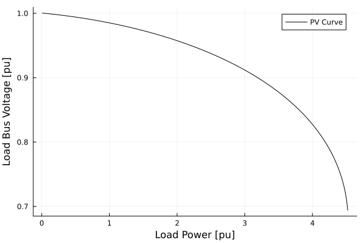
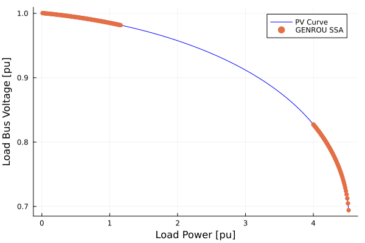

Tutorial Small Signal Analysis with Continuation Power Flow
Originally Contributed by: Rodrigo Henriquez-Auba
Introduction
This tutorial will introduce you to the functionality of PowerSimulationsDynamics and PowerFlows for running small signal analysis in a continuation power flow.
This tutorial presents a simulation of a two-bus system with a generator (represented with a GENROU + SEXS + TGOV1 model) at bus 1, and a load on bus 2. We will increase the load demand to observe the P-V curve and run a small-signal analysis to check if the system satisfies small-signal stability at different operating points.
Dependencies
julia> using PowerSimulationsDynamicsjulia> PSID = PowerSimulationsDynamicsPowerSimulationsDynamicsjulia> using PowerSystemCaseBuilderjulia> using PowerSystemsjulia> using PowerFlowsjulia> const PSY = PowerSystemsPowerSystemsjulia> using Plotsjulia> gr() # Disable Logging to avoid excessive informationPlots.GRBackend()julia> using Loggingjulia> Logging.disable_logging(Logging.Info);julia> Logging.disable_logging(Logging.Warn);
PowerSystemCaseBuilder.jl is a helper library that makes it easier to reproduce examples in the documentation and tutorials. Normally you would pass your local files to create the system data instead of calling the function build_system. For more details visit PowerSystemCaseBuilder Documentation
PowerSystems (abbreviated with PSY) is used to properly define the data structure and establish an equilibrium point initial condition with a power flow routine using PowerFlows.
Load the system
We load the system using PowerSystemCaseBuilder.jl. This system only have a generator without dynamic data on which we can use PowerFlows to generate a P-V (or nose) curve.
julia> sys_static = build_system(PSIDSystems, "2 Bus Load Tutorial")System ┌───────────────────┬─────────────┐ │ Property │ Value │ ├───────────────────┼─────────────┤ │ Name │ │ │ Description │ │ │ System Units Base │ SYSTEM_BASE │ │ Base Power │ 100.0 │ │ Base Frequency │ 60.0 │ │ Num Components │ 8 │ └───────────────────┴─────────────┘ Static Components ┌─────────────────┬───────┐ │ Type │ Count │ ├─────────────────┼───────┤ │ ACBus │ 2 │ │ Arc │ 1 │ │ Area │ 1 │ │ ExponentialLoad │ 1 │ │ Line │ 1 │ │ LoadZone │ 1 │ │ ThermalStandard │ 1 │ └─────────────────┴───────┘
Note that this system contains an Exponential Load, but the parameters are set up to zero, so it behaves a Constant Power Load:
julia> first(get_components(PSY.ExponentialLoad, sys_static))ExponentialLoad: load1021: name: load1021 available: true bus: ACBus: BUS 2 active_power: 0.1 reactive_power: 0.032799999999999996 α: 0.0 β: 0.0 base_power: 100.0 max_active_power: 0.1 max_reactive_power: 0.032799999999999996 services: 0-element Vector{Service} dynamic_injector: nothing ext: Dict{String, Any}() InfrastructureSystems.SystemUnitsSettings: base_value: 100.0 unit_system: UnitSystem.SYSTEM_BASE = 0 has_supplemental_attributes: false has_time_series: false
Create a P-V curve
The next step is to run multiple power flows and store the voltage at the load and the active power. For this example we will set up the power factor to be unitary (i.e. no reactive power at the load).
julia> # Create a Power Range to change the power load active power P_range = 0.01:0.01:4.6; # Choose the power factorjulia> load_pf = 1.0;
Then create vectors to store the results
julia> # PV Curve Results P_load_p = Vector{Float64}();julia> V_load_p = Vector{Float64}();
Then, we run multiple power flows in a for loop by changing the active power of the load:
julia> for p in P_range # Change the active power and reactive power of the load power = p * 1.0 load = get_component(PSY.ExponentialLoad, sys_static, "load1021") set_active_power!(load, power) q_power = power * tan(acos(load_pf)) set_reactive_power!(load, q_power) # Run Power Flow status = solve_ac_powerflow!(sys_static) if !status # Finish the loop if the power flow fails print("Power Flow failed at p = $(power)") break end # Obtain the bus voltage information bus = get_component(Bus, sys_static, "BUS 2") Vm = get_magnitude(bus) # Store values in the vectors push!(V_load_p, Vm) push!(P_load_p, power) end┌ Error: The powerflow solver returned convergence = false └ @ PowerFlows ~/.julia/packages/PowerFlows/zesCE/src/nlsolve_ac_powerflow.jl:153 ┌ Error: The powerflow solver returned convergence = false └ @ PowerFlows ~/.julia/packages/PowerFlows/zesCE/src/nlsolve_ac_powerflow.jl:52 Power Flow failed at p = 4.53
The plot can be visualized with:
julia> plot(P_load_p, V_load_p, label = "PV Curve", xlabel = "Load Power [pu]", ylabel = "Load Bus Voltage [pu]", color = :black )Plot{Plots.GRBackend() n=1}

Run Small-Signal Analysis besides the Continuation Power Flow
To run a small-signal analysis we require a dynamic model of the machine. We can use PowerSystemCaseBuilder to the load the same system, but with a dynamic model for the generator, including a GENROU + SEXS exciter + TGOV1 governor.
julia> sys = build_system(PSIDSystems, "2 Bus Load Tutorial GENROU")System ┌───────────────────┬─────────────┐ │ Property │ Value │ ├───────────────────┼─────────────┤ │ Name │ │ │ Description │ │ │ System Units Base │ SYSTEM_BASE │ │ Base Power │ 100.0 │ │ Base Frequency │ 60.0 │ │ Num Components │ 9 │ └───────────────────┴─────────────┘ Static Components ┌─────────────────┬───────┐ │ Type │ Count │ ├─────────────────┼───────┤ │ ACBus │ 2 │ │ Arc │ 1 │ │ Area │ 1 │ │ ExponentialLoad │ 1 │ │ Line │ 1 │ │ LoadZone │ 1 │ │ ThermalStandard │ 1 │ └─────────────────┴───────┘ Dynamic Components ┌─────────────────────────────────────────────────────────────────────────────── │ Type ⋯ ├─────────────────────────────────────────────────────────────────────────────── │ DynamicGenerator{RoundRotorQuadratic, SingleMass, SEXS, SteamTurbineGov1, PS ⋯ └─────────────────────────────────────────────────────────────────────────────── 2 columns omitted
Here are the components of the generator:
julia> first(get_components(DynamicGenerator, sys))DynamicGenerator: generator-101-1: name: generator-101-1 ω_ref: 1.0 machine: RoundRotorQuadratic shaft: SingleMass avr: SEXS prime_mover: SteamTurbineGov1 pss: PSSFixed base_power: 100.0 n_states: 10 states: [:eq_p, :ed_p, :ψ_kd, :ψ_kq, :δ, :ω, :Vf, :Vr, :x_g1, :x_g2] ext: Dict{String, Any}() InfrastructureSystems.SystemUnitsSettings: base_value: 100.0 unit_system: UnitSystem.SYSTEM_BASE = 0 has_supplemental_attributes: false has_time_series: false
Besides the results of the P-V curve, we need to store if the system is small-signal stable or not by looking if there is a positive real part eigenvalue.
julia> # Vectors to store stability using a boolean (true for stable). stable_vec = Vector{Bool}();julia> status_vec = Vector{Bool}(); # PV Curve Resultsjulia> P_load_p = Vector{Float64}();julia> V_load_p = Vector{Float64}();
We then run the main for loop by updating the load active power, but in addition we create a PowerSimulationsDynamics simulation on which we can run a small-signal analysis to check stability.
julia> for p in P_range # Change the active power and reactive power of the load power = p * 1.0 load = get_component(PSY.ExponentialLoad, sys_static, "load1021") set_active_power!(load, power) q_power = power * tan(acos(load_pf)) set_reactive_power!(load, q_power) # Run Power Flow status = solve_ac_powerflow!(sys_static) if !status # Finish the loop if the power flow fails print("Power Flow failed at p = $(power)") break end # Obtain the bus voltage information bus = get_component(Bus, sys_static, "BUS 2") Vm = get_magnitude(bus) # Store values in the vectors push!(V_load_p, Vm) push!(P_load_p, power) # Update Load Power in the GENROU system load = get_component(PSY.ExponentialLoad, sys, "load1021") set_active_power!(load, power) q_power = power * tan(acos(load_pf)) set_reactive_power!(load, q_power) # Construct Simulation sim = Simulation(ResidualModel, sys, mktempdir(), (0.0, 1.0)) if sim.status == PSID.BUILT # Check small-signal stability sm = small_signal_analysis(sim).stable # Push results of small-signal stability push!(stable_vec, sm) # Push results if the simulation was able to be constructed push!(status_vec, true) else # Push results if the simulation was not able to be constructed push!(status_vec, false) end end┌ Error: The powerflow solver returned convergence = false └ @ PowerFlows ~/.julia/packages/PowerFlows/zesCE/src/nlsolve_ac_powerflow.jl:153 ┌ Error: The powerflow solver returned convergence = false └ @ PowerFlows ~/.julia/packages/PowerFlows/zesCE/src/nlsolve_ac_powerflow.jl:52 Power Flow failed at p = 4.53
The following plot showcases the P-V curve, while also showcasing (in red) the regions on which the system is small-signal stable.
julia> # Find where is stable and unstable dict_true_ixs_p = Vector();julia> dict_false_ixs_p = Vector();julia> dict_true_ixs_p = findall(x->x, stable_vec);julia> dict_false_ixs_p = findall(x->!x, stable_vec); # Create plotjulia> true_ixs = dict_true_ixs_p;julia> plot(P_load_p, V_load_p, color = :blue, label = "PV Curve", xlabel = "Load Power [pu]", ylabel = "Load Bus Voltage [pu]")Plot{Plots.GRBackend() n=1}julia> plot!(Plots.scatter!(P_load_p[true_ixs] , V_load_p[true_ixs], markerstrokewidth= 0, label = "GENROU SSA"))Plot{Plots.GRBackend() n=2}

This results is consistent with most of the literature for dynamic generator models supplying constant power loads, on which by increasing the active power of the load, produce critical eigenvalues which cross the $j\omega$ axis at some point. This is called a Hopf Bifurcation, in this case a subcritical one since the limit cycles are unstable.